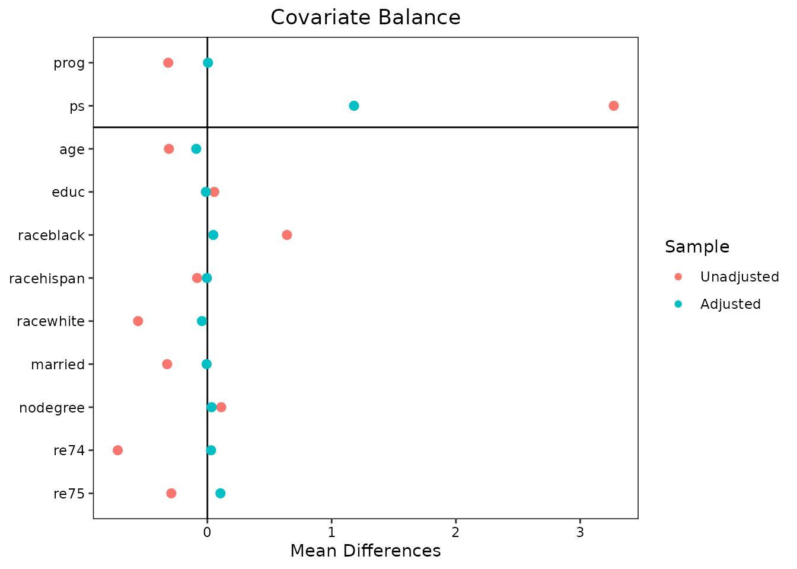
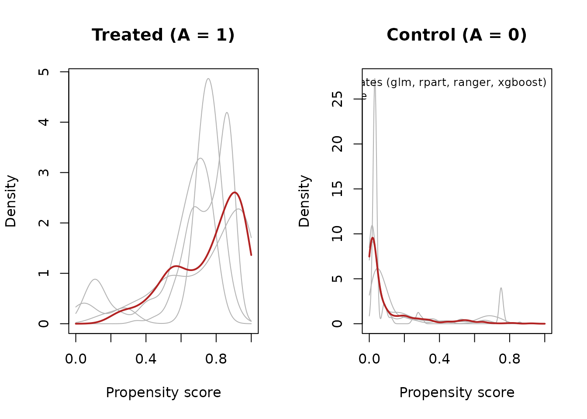
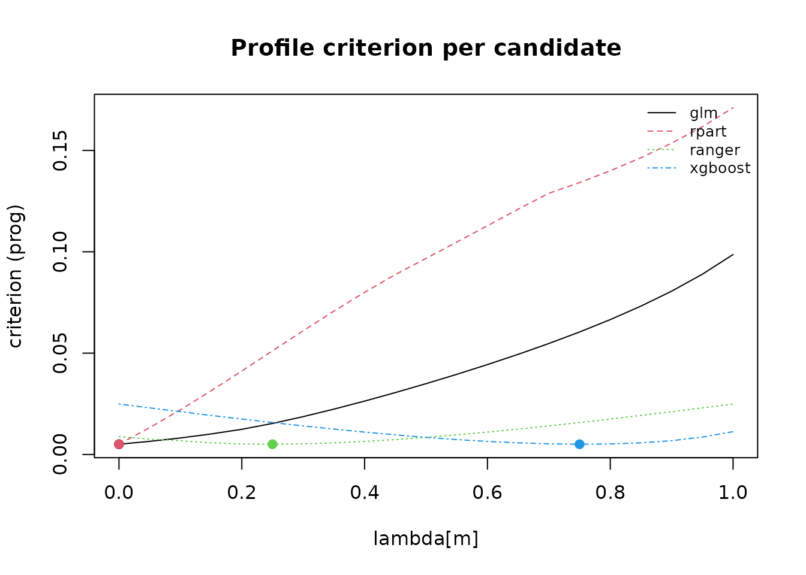

Introduction
Propensity score (PS) analyses are only as good as the propensity
score model, and in practice the analyst rarely knows which model is
right. Logistic regression may miss nonlinearities and interactions;
flexible machine learning methods (classification trees, random forests,
gradient boosting) capture them but can produce extreme scores and
unstable weights. Different candidate models often yield propensity
scores that all “look reasonable” yet lead to materially different
effect estimates — a form of model dependence that undermines the
credibility of the analysis. Rather than committing to a single model,
psAve constructs a model-averaged propensity
score: a convex combination
of candidate propensity scores, with the mixing weights
chosen on a simplex grid to optimize a balance criterion, implementing
the method of Kabata, Stuart & Shintani (2024).
The distinguishing feature of the method is what the mixing
weights are asked to balance. Covariate balance criteria treat all
covariates as equally important, but for bias in the treatment effect
what matters is balance on covariates as they relate to the
outcome. The prognostic score — the predicted outcome under the
untreated condition,
,
estimated from untreated units only (Hansen 2008) — summarizes exactly
that relationship, and prognostic-score balance has been shown to be a
useful diagnostic for propensity score methods (Stuart, Lee & Leacy
2013). psAve takes this one step further and uses the
weighted standardized mean difference of a (model-averaged) prognostic
score as the selection criterion for the propensity score
mixing weights. In the simulations of Kabata, Stuart & Shintani
(2024), this “Prog (Ave)” strategy gave the lowest and most robust bias
and RMSE across 16 scenarios, compared with single-model propensity
scores and with model averaging targeted at prediction accuracy or
covariate balance. The result of psave() is deliberately
modest: a numeric vector of propensity scores, designed to be handed to
MatchIt::matchit() as a distance measure or to
WeightIt::weightit() as a propensity score, with balance
assessment via cobalt.
Installation
psAve can be installed from GitHub:
# install.packages("remotes")
remotes::install_github("kabajiro/psAve")The core of the package requires only cobalt (an
Import). The candidate learners beyond logistic regression
(rpart, ranger, xgboost), as well
as MatchIt and WeightIt for the downstream
analysis, are Suggests and are only needed when you actually request
them.
A matching workflow with the lalonde data
We illustrate the paper’s headline estimator — the model-averaged
propensity score selected by balance on the model-averaged prognostic
score, “Prog (Ave)” — on the lalonde dataset that ships
with MatchIt. The estimand is the average treatment effect
in the treated (ATT), the package default.
Step 1: Estimate the model-averaged propensity score
psave() looks deliberately like matchit()
and weightit(): a treatment formula and a data frame. The
one addition is the outcome argument, which names the
outcome variable used to build the prognostic score. A one-sided formula
(~ re78) reuses the covariates on the right-hand side of
formula as the prognostic-model predictors; a two-sided
formula (re78 ~ age + educ + ...) lets you specify a
distinct prognostic model.
Two of the default candidate learners (ranger and
xgboost) are stochastic, so set a seed first for
reproducibility:
set.seed(1234)
fit <- psave(treat ~ age + educ + race + married + nodegree + re74 + re75,
data = lalonde, outcome = ~ re78)By default this fits four candidate propensity score models
("glm", "rpart", "ranger",
"xgboost") and four candidate prognostic models with the
same learners, then searches all 1,771 points of the mixing-weight
simplex (step 0.05, four candidates). The whole call takes on the order
of seconds to a minute on the lalonde data (n = 614), with
xgboost dominating the runtime; for a quick first pass you
can restrict ps.methods (e.g.,
ps.methods = c("glm", "rpart")).
fit
#> A psave object (model-averaged propensity score)
#> - estimand: ATT
#> - criterion: prog (weighted ASMD of the model-averaged prognostic score)
#> - sample: 614 units (185 treated, 429 control)
#>
#> lambda (PS mixing weights):
#> glm 0.000 | |
#> rpart 0.000 | |
#> ranger 0.250 |===== |
#> xgboost 0.750 |=============== |
#>
#> gamma (prognostic mixing weights):
#> glm 0.000 | |
#> rpart 0.000 | |
#> ranger 0.000 | |
#> xgboost 1.000 |====================|
#>
#> Criterion value at selected lambda: 0.00506
#>
#> Balance preview (worst covariates + prognostic score):
#> smd.un smd.wt ks.un ks.wt
#> racewhite 1.882 0.147 0.558 0.044
#> raceblack 1.762 0.131 0.640 0.048
#> re75 0.290 0.105 0.288 0.121
#> prog 0.315 0.005 0.176 0.142
#>
#> Next:
#> MatchIt::matchit(treat ~ age + educ + race + married + nodegree + re74 + re75, data = lalonde, distance = x$ps)
#> or: psave_match(x)
#> WeightIt::weightit(treat ~ age + educ + race + married + nodegree + re74 + re75, data = lalonde, ps = x$ps, estimand = "ATT")
#> or: psave_weight(x)The printout shows the estimand and criterion, the selected mixing
weights
(for the propensity score candidates) and
(for the prognostic candidates), the achieved criterion value, a short
balance preview, and — importantly — the literal next call you would
issue to carry the score into MatchIt.
Step 2: Match on the averaged propensity score
fit$ps is a plain numeric vector, named by the rownames
of data, and can be passed directly to
MatchIt::matchit() as the distance
argument:
m <- MatchIt::matchit(treat ~ age + educ + race + married + nodegree + re74 + re75,
data = lalonde, distance = fit$ps,
method = "nearest", caliper = .2)Retyping the formula and the data name creates an opportunity for row
misalignment if the two calls do not use literally the same data. The
convenience wrapper psave_match() removes that hazard by
reusing the formula and data stored in the psave object;
all other arguments are forwarded verbatim to matchit(),
and the result is an ordinary matchit object:
m <- psave_match(fit, method = "nearest", caliper = .2)
m
#> A `matchit` object
#> - method: 1:1 nearest neighbor matching without replacement
#> - distance: User-defined [caliper]
#> - caliper: <distance> (0.069)
#> - number of obs.: 614 (original), 104 (matched)
#> - target estimand: ATT
#> - covariates: age, educ, race, married, nodegree, re74, re75Step 3: Assess balance, including prognostic-score balance
Because the object returned by psave_match() is a
genuine matchit object, the full cobalt
toolkit applies. Supplying the model-averaged prognostic score through
distance adds a prognostic-balance row to the balance table
— the diagnostic recommended by Stuart, Lee & Leacy (2013):
cobalt::bal.tab(m, distance = data.frame(prog = fit$prog))
#> Balance Measures
#> Type Diff.Adj
#> prog Distance 0.3699
#> distance Distance 0.2411
#> age Contin. -0.2715
#> educ Contin. -0.1913
#> race_black Binary -0.2308
#> race_hispan Binary 0.0769
#> race_white Binary 0.1538
#> married Binary 0.0385
#> nodegree Binary 0.0385
#> re74 Contin. 0.2043
#> re75 Contin. 0.2986
#>
#> Sample sizes
#> Control Treated
#> All 429 185
#> Matched 52 52
#> Unmatched 377 133You can also call cobalt::bal.tab() directly on the
psave object itself, which assesses balance for the implied
inverse-probability weights at the fitted estimand and automatically
includes both the averaged propensity score and the prognostic score as
distance measures:
cobalt::bal.tab(fit)
#> Balance Measures
#> Type Diff.Adj
#> ps Distance 1.1799
#> prog Distance 0.0051
#> age Contin. -0.0897
#> educ Contin. -0.0120
#> raceblack Binary 0.0475
#> racehispan Binary -0.0039
#> racewhite Binary -0.0437
#> married Binary -0.0063
#> nodegree Binary 0.0339
#> re74 Contin. 0.0294
#> re75 Contin. 0.1050
#>
#> Effective sample sizes
#> Control Treated
#> Unadjusted 429. 185
#> Adjusted 36.58 185Step 4: Estimate the treatment effect
Effect estimation after matching is deliberately not part of
psAve — the matched object is a standard
matchit object, so all established guidance applies
unchanged. We recommend following MatchIt’s vignette on
estimating effects after matching
(vignette("estimating-effects", package = "MatchIt")),
which uses the marginaleffects package to compute the ATT
with cluster-robust standard errors on the matched sample. For a
weighting analysis instead of matching, including the exact IPW
estimator used in the paper, see
vignette("weighting", package = "psAve").
Interpreting the output
print()
print(fit) is a one-screen orientation: the estimand and
selection criterion, the mixing weights rendered as labeled text bars
(so you can see at a glance which candidate models contribute to the
average), the criterion value at the selected
,
a preview of the worst-balanced covariates plus the prognostic score,
and the literal next call. A candidate receiving weight 0 was judged not
to improve prognostic-score balance; that is informative, not a
failure.
summary()
summary(fit)
#> Summary of a psave fit
#> Call: psave(formula = treat ~ age + educ + race + married + nodegree + re74 + re75, data = lalonde, outcome = ~re78)
#>
#> Estimand: ATT; criterion: prog (weighted ASMD of the model-averaged prognostic score)
#> Sample: 185 treated, 429 control
#>
#> Selected mixing weights:
#> lambda (PS):
#> glm rpart ranger xgboost
#> 0.00 0.00 0.25 0.75
#> gamma (prognostic):
#> glm rpart ranger xgboost
#> 0 0 0 1
#> untreated-set MSE of prognostic candidates:
#> glm rpart ranger xgboost average
#> 41000000 33400000 13500000 2580000 2580000
#>
#> Criterion value at selected lambda: 0.00506
#>
#> All criteria, per candidate and for the selected average:
#> logloss smd ks prog
#> glm 0.397 0.029 0.083 0.099
#> rpart 0.318 0.084 0.065 0.171
#> ranger 0.177 0.099 0.074 0.025
#> xgboost 0.216 0.051 0.055 0.011
#> average 0.202 0.069 0.057 0.005
#>
#> Balance (covariates + prognostic score):
#> smd.un smd.wt ks.un ks.wt
#> age 0.309 0.090 0.158 0.126
#> educ 0.055 0.012 0.111 0.070
#> raceblack 1.762 0.131 0.640 0.048 *
#> racehispan 0.350 0.016 0.083 0.004
#> racewhite 1.882 0.147 0.558 0.044 *
#> married 0.826 0.016 0.324 0.006
#> nodegree 0.245 0.075 0.111 0.034
#> re74 0.721 0.029 0.447 0.060
#> re75 0.290 0.105 0.288 0.121 *
#> prog 0.315 0.005 0.176 0.142
#> ---
#> '*' = weighted SMD > 0.1summary(fit) adds three pieces:
- Mixing-weight tables for and . The weights tell you which learners the untreated-outcome model relied on (selected by unweighted mean squared error among untreated units).
- The diagnostics table: for every single candidate propensity score and for the selected average, all four criteria are reported (log loss, mean weighted ASMD of covariates, mean weighted KS of covariates, and weighted ASMD of the prognostic score). This is the “was averaging worth it?” table — you can verify directly that the averaged score achieves better prognostic-score balance than any single candidate, and see what it trades away (typically a little log loss: the averaged score is usually a worse predictor of treatment than the most flexible single learner, by design).
- The full balance table: unweighted versus weighted SMD and KS statistics for every covariate and for the prognostic score, with the conventional 0.1 threshold marked.
plot()
plot(fit, type = "balance")
#> Warning in cobalt::love.plot(x = cobalt::bal.tab(x = structure(list(ps = c(NSW1 = 0.623081080701079, : Standardized mean differences and raw mean differences are present in the same
#> plot. Use the `stars` argument to distinguish between them and appropriately
#> label the x-axis. See `love.plot()` for details.
type = "balance" draws a Love plot (via
cobalt::love.plot()) of covariate and prognostic-score
balance before and after weighting by the implied weights.
plot(fit, type = "distribution")
type = "distribution" shows the distribution of the
propensity scores by treatment group — each grey curve is one candidate
model, and the colored curve is the selected average. This is the plot
to inspect for extreme candidate scores: flexible learners fit in-sample
can push scores toward 0 or 1 (they are clipped to
[0.01, 0.99] by default), and you can see how the averaging
tempers them.
plot(fit, type = "criterion")
type = "criterion" displays the selection criterion over
the
grid (exactly for up to three candidates; as one profile per candidate
otherwise), so you can judge how sharply the criterion identifies the
selected mixture.
FAQ
Doesn’t using the outcome bias my analysis?
This is the natural first objection, and the design of the method answers it. Two facts matter:
- The prognostic model never sees treated outcomes. Following Hansen (2008), the prognostic score is estimated only on untreated units and then predicted for everyone. The mixing weights are likewise selected using prediction error among untreated units only. No model in the pipeline uses the treated-arm outcomes.
- The selection criterion never contrasts outcomes between arms. The criterion is a balance statistic — the weighted standardized mean difference of the prognostic score between treatment groups. It measures whether the two groups look comparable on an outcome-relevant summary of the covariates; it does not measure, and cannot be driven toward, any particular treatment effect estimate. At no point is a treated-versus-untreated outcome comparison computed during design.
This preserves the separation between the design stage and
the analysis stage (Rubin 2001; Hansen 2008): everything
psave() does is a function of the covariates, the treatment
indicator, and the untreated units’ outcomes, exactly like the
prognostic-score balance diagnostics advocated by Stuart, Lee &
Leacy (2013). It is the same reasoning under which
MatchIt’s documentation welcomes externally estimated
distance measures so long as no post-treatment information about the
treated-untreated outcome contrast enters the design. A fuller
discussion, with the exact formulas, is in
vignette("method-details", package = "psAve").
References
Hansen, B. B. (2008). The prognostic analogue of the propensity score. Biometrika, 95(2), 481–488. doi:10.1093/biomet/asn004
Kabata, D., Stuart, E. A., & Shintani, A. (2024). Prognostic score-based model averaging approach for propensity score estimation. BMC Medical Research Methodology, 24, 228. doi:10.1186/s12874-024-02350-y
Stuart, E. A., Lee, B. K., & Leacy, F. P. (2013). Prognostic score-based balance measures can be a useful diagnostic for propensity score methods in comparative effectiveness research. Journal of Clinical Epidemiology, 66(8 Suppl), S84–S90. doi:10.1016/j.jclinepi.2013.01.013